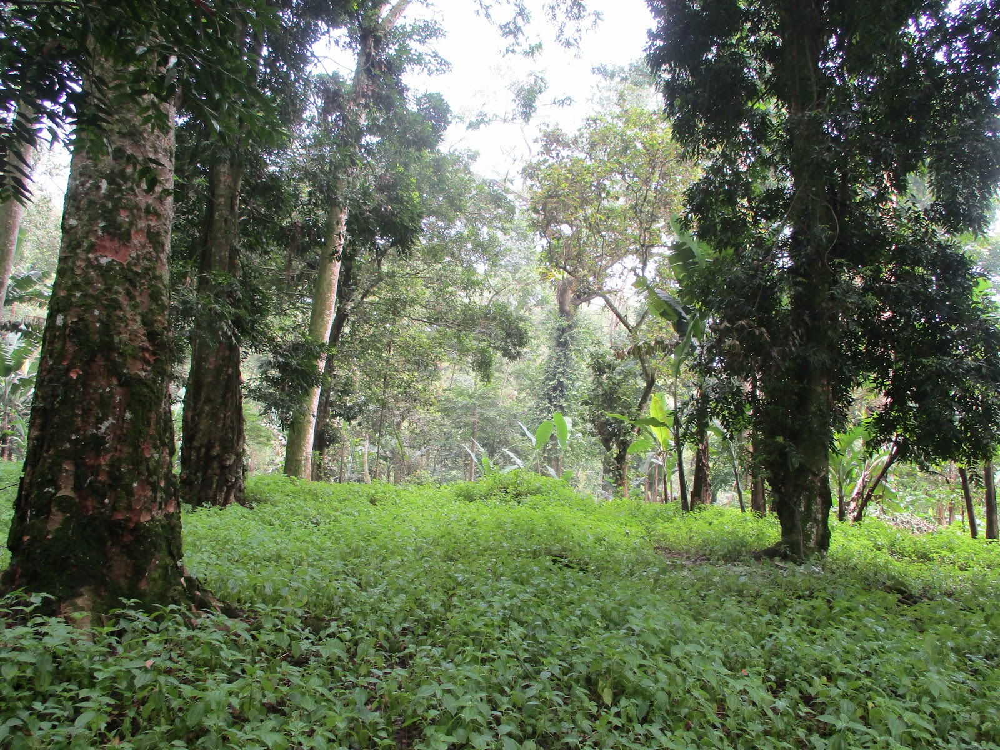

Belajar tanpa mengganggu.
Interpretasi menumbuhkan pemahaman sambil menghormati kehidupan liar dan kapasitas kawasan.
Kami menghubungkan pengembangan kawasan, pengalaman wisata, produk lokal, dan pemantauan manfaat dalam kemitraan bersama masyarakat.

ArahWisata lahir dari gagasan untuk meningkatkan nilai tambah hasil hutan bukan kayu melalui ekowisata interpretatif dan pasar produk lokal.
Leuweung Bobojong di Tamansari, Kabupaten Bogor, menjadi kawasan percontohan pertama. Pohpohan menghubungkan cerita agroforestri, pengalaman bersama petani, dan pengembangan KEPOTA.
Visi kami adalah menjadi mitra pengembangan ekowisata berbasis masyarakat yang mengintegrasikan biodiversitas, agroforestri, kebugaran, kebudayaan lokal, dan inovasi produk.
Interpretasi menumbuhkan pemahaman sambil menghormati kehidupan liar dan kapasitas kawasan.
Kewenangan pengelola, persetujuan cerita budaya, serta peran dan pembayaran mitra dibangun dalam kesepakatan.
Catatan kegiatan, transaksi, dan kondisi lapangan menjadi dasar evaluasi bersama.
Pengembangan program, kemitraan, dan pemasaran.
Operasi, jalur kegiatan, dan pelaporan lapangan.
Produk, administrasi platform, dan pembukuan.
Pembayaran pemandu, petani, konsumsi, akses, dan produsen lokal dicatat dalam penyelenggaraan layanan.
Pengarahan, kondisi jalur, sampah, serta etika perjumpaan menjadi bagian pemantauan kegiatan.
Keterlibatan narasumber dan persetujuan penggunaan cerita menjadi landasan interpretasi budaya.
Pencatatan keluhan, evaluasi bulanan, dan tinjauan triwulanan membantu perbaikan bersama.
Konten program, tarif, kapasitas, kemitraan, serta inventaris mengacu pada proposal business plan dan inventaris Tim ArahWisata, Oktober 2026.
Foto kawasan bersumber dari dokumentasi Tim ArahWisata. Logo dan foto KEPOTA diberikan oleh tim. Gambar sabun dan minuman merupakan ilustrasi konsep pengembangan; penjelajah bentang alam adalah ilustrasi interaktif.